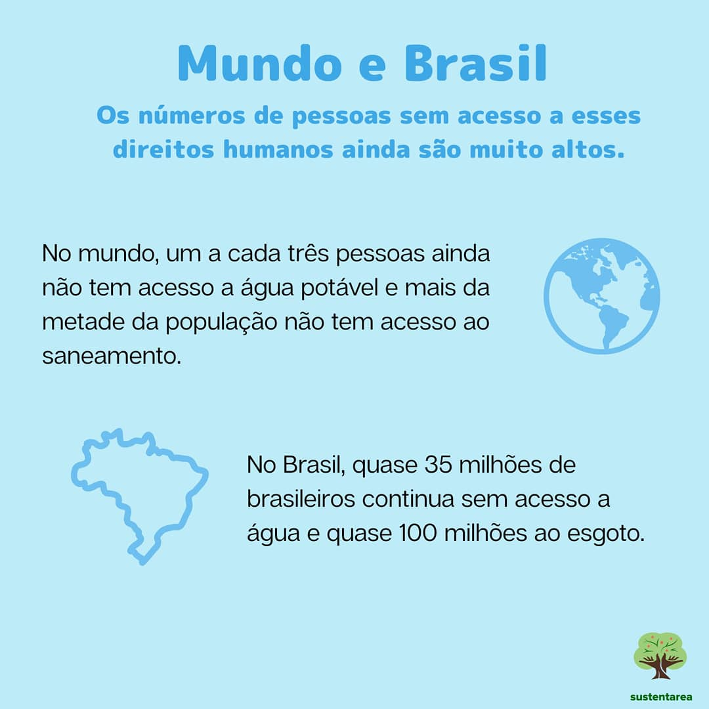

Desafios: ODS 6 – Água potável e saneamento
Garantir o acesso à água potável e saneamento para todos não é uma tarefa simples. Existem inúmeros desafios a serem superados, que variam desde questões infraestruturais até questões políticas e econômicas.
Em muitas regiões, a falta de infraestrutura básica e a poluição das fontes de água tornam difícil o acesso a água limpa e segura. Além disso, o crescimento populacional e a urbanização descontrolada pressionam ainda mais os já escassos recursos hídricos disponíveis.
Outro desafio significativo é a falta de investimento em saneamento básico, que leva a problemas de saúde pública, degradação ambiental e compromete o desenvolvimento sustentável das comunidades.